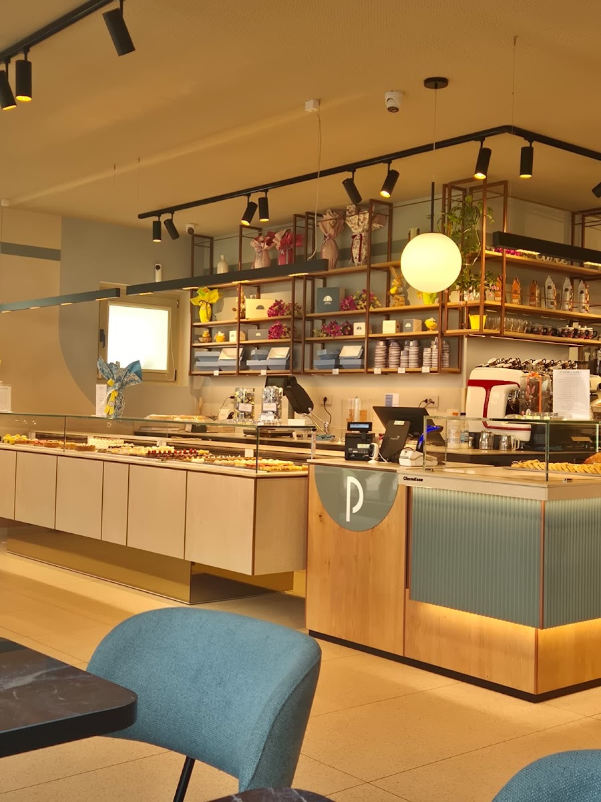
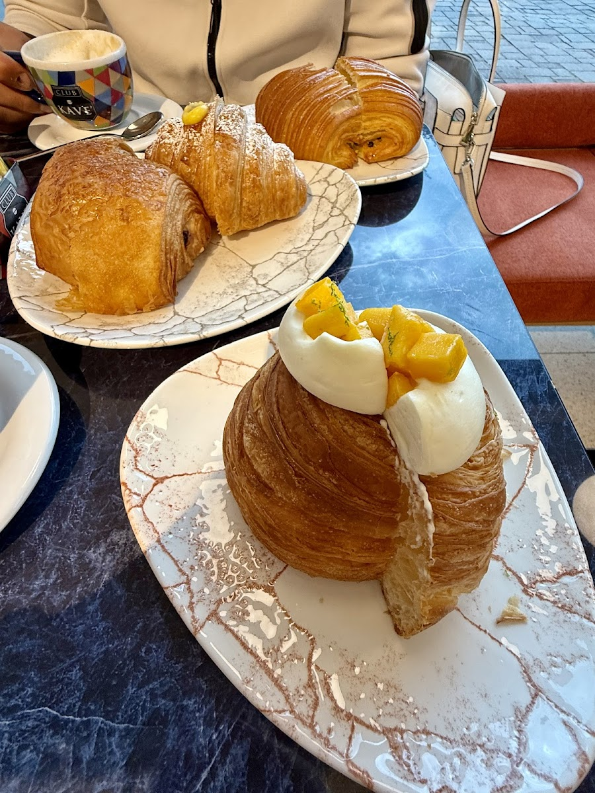
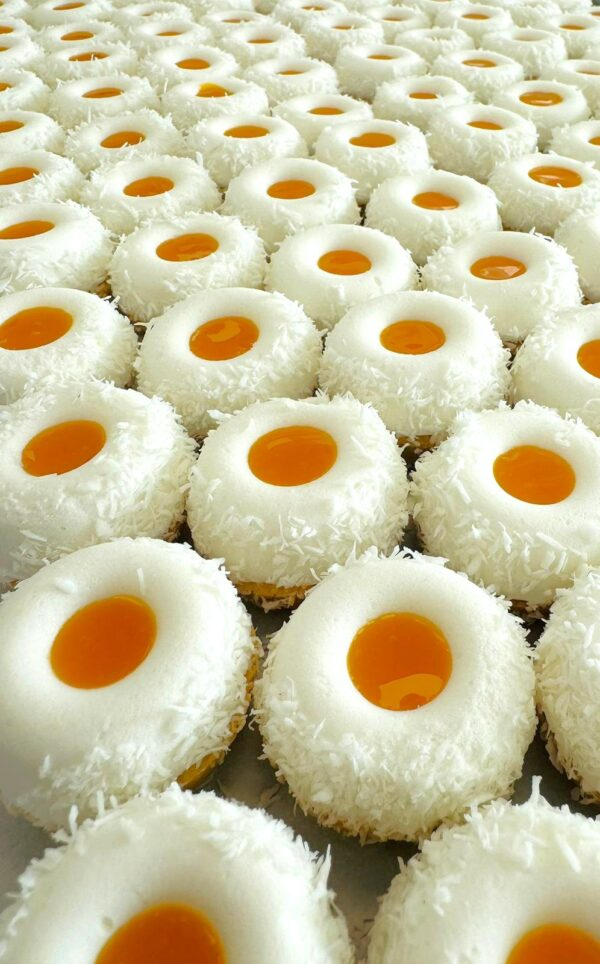
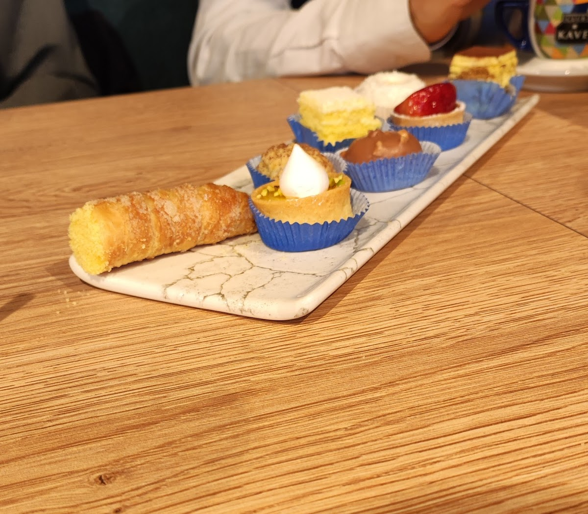
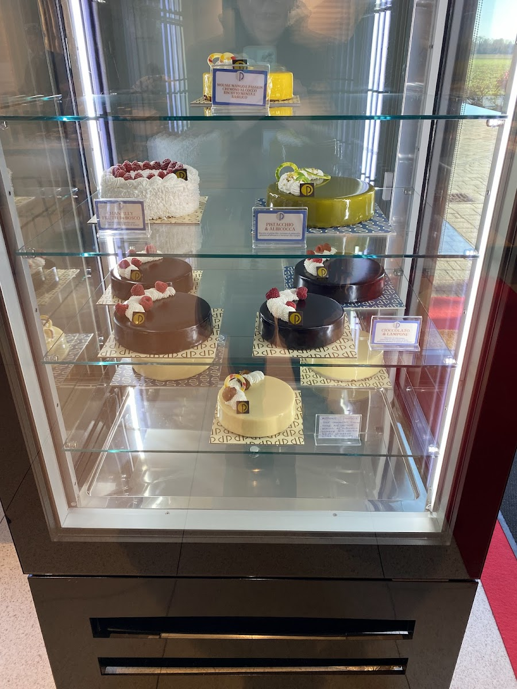
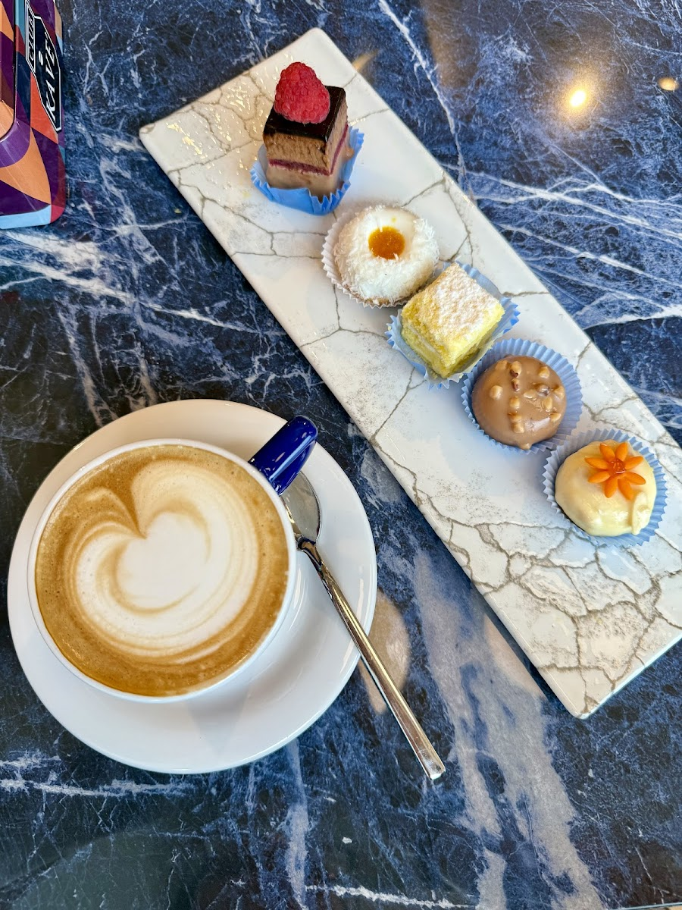
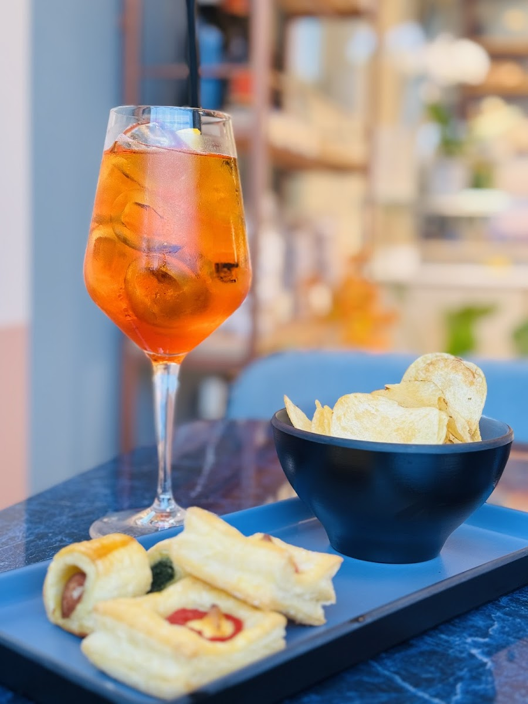

Esperienza artigianale, un dolce alla volta
Ogni dolce che sforniamo è frutto di una meticolosa attenzione ai dettagli e di anni di passione. Ingredienti freschi, ricette curate, ogni giorno.
Solo ingredienti freschi e genuini
Seguiamo rigorosi standard di igiene e sicurezza alimentare per garantire la massima freschezza e bontà in ogni morso — dalla colazione di tutti i giorni ai dolci per le grandi occasioni.
Cornetti sfornati ogni mattina
L'impasto è il nostro punto di forza: fragrante, leggero, sfogliato a regola d'arte. Il prodotto più amato dai nostri clienti abituali.
Alternative senza glutine
Muffin e crostate senza glutine, pensate per chi ha esigenze alimentari specifiche, senza rinunciare al gusto.
Torte su ordinazione
Dalle feste di compleanno ai matrimoni eleganti: raccontaci l'occasione e realizziamo il dolce su misura.
Dalle classiche torte alle creazioni più innovative
La nostra equipe di pasticceri lavora con dedizione e creatività per soddisfare ogni desiderio, dai piccoli momenti di indulgenza alle grandi celebrazioni.



Dalla vetrina, pronte per la tua occasione

Chantilly Frutti di Bosco
Pan di spagna, crema chantilly e un tripudio di frutti di bosco freschi.
Pistacchio & Albicocca
Glassa al pistacchio, cuore morbido all'albicocca. Uno dei grandi classici Pedrini.
Cioccolato & Lampone
Mousse al cioccolato fondente e lampone fresco, per chi ama i contrasti decisi.
Non solo pasticceria
Colazione con latte art, aperitivo tra amici: la Pasticceria Pedrini è anche il posto giusto per una pausa, a qualsiasi ora del giorno.


197 recensioni, 4,5 stelle su Google
Una selezione di quello che i nostri clienti raccontano — recensioni pubbliche verificate su Google Maps.
"L'impasto dei cornetti è il vero punto di forza: fragrante, leggero e saporitissimo."
"La qualità dei prodotti era molto alta e il personale gentile e professionale."
"Locale grande, luminoso e ben arredato. Prodotti sfogliati leggeri e curati."
Vieni a trovarci
Siamo a Terno d'Isola, in provincia di Bergamo. Ti aspettiamo dal martedì alla domenica.
-
📍
IndirizzoVia Olimpo, 47 — 24030 Terno d'Isola (BG)
-
📞
Telefono035 578 8324
-
🕒
OrariMartedì–Domenica: 7:00–19:00 · Chiuso il lunedì
-
🥐
ServiziConsumazione sul posto · Asporto
Raccontaci cosa vorresti
Compleanni, matrimoni, ricorrenze speciali: prenota il tuo dolce su misura con una telefonata.
📞 Chiama 035 578 8324